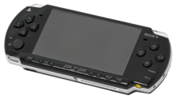
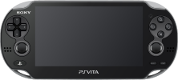

Playstation prtable

PlayStation Portable стал первой портативной игровой консолью от Sony Computer Entertainment. Анонс PSP состоялся на выставке E3 2003[51]. Первые продажи консоли были начаты в Японии в декабре 2004 года[52], в Северной Америке — в марте 2005 года[53], в PAL-регионах продажи стартовали в сентябре 2005 года[54]. Данная консоль впервые использовала новый запатентованный оптический носитель данных, известный как Universal Media Disc[55]. Имеет возможность расширения встроенной флеш-памяти с помощью карт Memory Stick[56]. Кнопки управления PSP аналогичны стационарным консолям PlayStation.
В сентябре 2007 года вышла первая версия обновлённой портативной консоли под названием PSP-2000, также известной как PSP Slim & Lite. Новая консоль была на 33 % легче и на 19 % тоньше оригинальной модели PlayStation Portable[57]. В 2008 году Sony выпустила вторую обновлённую версию под названием PSP-3000.
В октябре 2009 года Sony выпустила модель PlayStation Portable Go. В отличие от предыдущих моделей, PSP Go не имеет возможности использовать накопители Universal Media Disc, вместо него в консоли было встроено 16 гигабайт флеш-памяти[58], которые можно увеличить до 32 гигабайт с помощью карты памяти Memory Stick Micro (M2). Также, в отличие от предыдущих моделей PSP, аккумуляторная батарея PSP Go не снимается. Устройство стало на 43 % легче самой первой портативной консоли PSP-1000[59], и на 16 % легче последней PSP-3000[60]. Одним из отличий от предыдущих консолей стал и экран, который стал сдвижным. PSP Go не заменил предыдущую модель PSP-3000, обе модели производились и продавались одновременно[59]. Из-за отсутствия возможности проигрывания дисков, все игры на PSP Go покупались и загружались из PlayStation Store. Благодаря встроенной технологии Bluetooth к PSP Go возможно подключить игровые контроллеры от PlayStation 3[60].
Последней моделью на основе Playstation Portable стала PSP-E1000 — бюджетная версия PSP-3000, которая, в отличие от предыдущих моделей PSP, не оснащена Wi-Fi и стереодинамиками, они были заменены на один монодинамик[61]. E1000 был анонсирован на Gamescom 2011
Playstation VITA

PlayStation Vita стала портативной консолью нового поколения от Sony. Данная консоль была официально представлена компанией 27 января 2011 года на конференции PlayStation Meeting 2011[63]. 17 декабря 2011 года произошёл её выход в Японии, 22 февраля 2012 года — в Европе, а также в Северной и Южной Америке[64]. PS Vita оснащена 5-дюймовым сенсорным OLED экраном, двумя аналоговыми стиками, сенсорной панелью на задней части устройства и 4-ядерным процессором ARM Cortex A9.
Осенью 2013 года в Японии была выпущена новая модель PlayStation Vita — PCH-2000. Был обновлён дизайн устройства, консоль стала на 20 % тоньше и на 15 % легче по сравнению с оригинальной моделью, был заменён экран, а также время работы данной консоли увеличилось на час[66].
Поддержка PS Vita была прекращена в марте 2019 года. Джим Райан, один из руководителей Sony Interactive Entertainment, впоследствии заявил, что Sony не намерена продолжать заниматься рынком портативных игровых консолей.